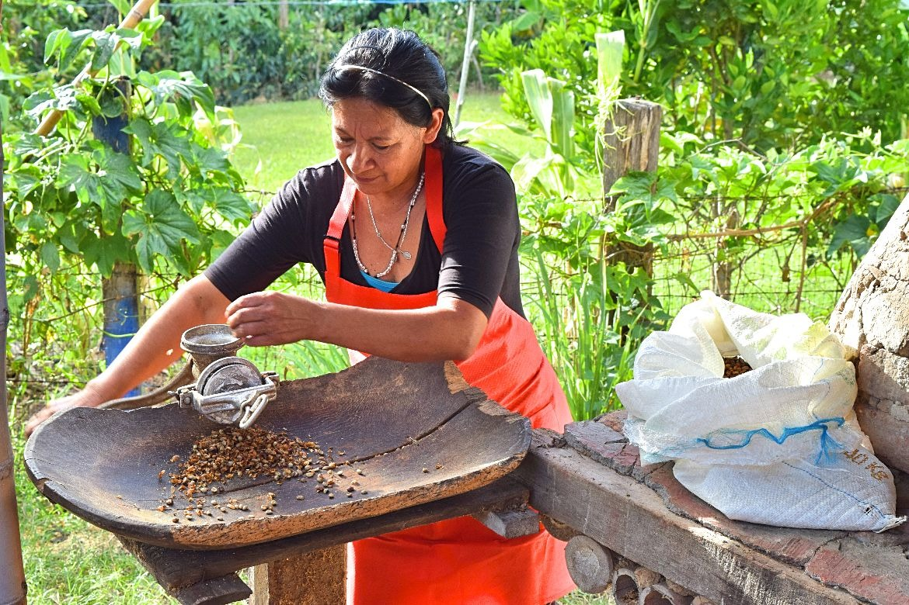
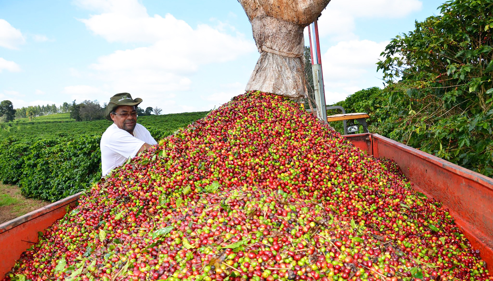

Koffie Oogst Gebieden
Ontdek de verschillende koffie oogst gebieden over de hele wereld. Van de rijke gronden van Ethiopië tot de hooglanden van Colombia, elke regio biedt unieke smaken en aroma's die uw koffie ervaring verrijken.

Ethiopië
Bekend als de geboorteplaats van koffie, biedt Ethiopië een breed scala aan smaken van bloemig tot fruitig.

Colombia
Colombiaanse koffie staat bekend om zijn gebalanceerde smaak en rijke aroma's, perfect voor elke gelegenheid.

Brazilië
Als 's werelds grootste koffieproducent, biedt Brazilië een verscheidenheid aan koffiebonen met een volle smaak en lage zuurgraad.